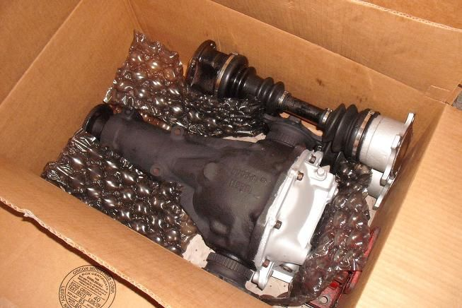

-
So I have read all of the information on the hybrid lsd swap for putting short nose lsd carrier into the long nose. I have an 87z with the open diff from an na vehicle and plan to tear it apart to swap out the already torn apart lsd carrier. Now my questions here really concern axle options. I will have my turbo axles to use prior to putting this thing on the road. Would the axle flanges from the z32 diff fit into the z31 housing correctly so I could in turn use j30 axles or are there other issues such as hub mating by using the j30 axles? i got the z32 diff for free and cant see not using the thing for lsd conversion. -
As I recall the pumpkin and ring gear use larger bolts, and the ring gear itself is thicker on the non-turbo one, but the twin-turbo one won't fit at all, being a r230v
This being important as the ring and pinion gears have to match, we can't get longnose pinion gears in the exact same cut as the shortnose -

I don't recall ring gear bolts being an issue. This is 1987 NA and Z32NA VLSD. The pumpkin will be moved slightly over to the left. I had the machinist grind off 5/16 or so off the left stub and re-cut the c clip groove. Problem solved. I think this swap is a waste of time without custom axles.Cha iro
enjoy building it yourself.
if it fails, fuck it.
at least you gave it a whirl. -
I've got the lsd carrier out and plan to order a new shim for the preloading of the setup. I wasnt able to tear the other diff out due to weather so that will have to wait a couple days. From what you GE is saying, I may have a problem with how the z32 carrier will mate to the z31 ring gear? I know by the swap information you are taking the lsd carrier and attaching it to the z31 ring gear which should all for no other changes with gear mating and such but I may be wrong. Ill know a little more when I do get the NA diff out and torn down. On to Augustus' comment on the axles. Are you saying you used the flange part from the z32 axle to diff portion and had it machined? Are the axles in the pic hybrid axles of some sort? I believe since the turbo axles ill use should be BDO axles and the J30 are BDO this would be the way to go for axles but I don't have them both to measure and see the differences. -
The older R200 (square flange) has the smaller ring gear bolts but 87 on up (round flange) is the same size as the Z32 NA, I have pulled apart both flavors of the Z31 diff. No guessing on my part.
My swap was pure Z32NA components, no mix match stuff. Those are hybrid axles, shortened 1.5 inches to accommodate the stubs protrusion from the diff housing.Cha iro
enjoy building it yourself.
if it fails, fuck it.
at least you gave it a whirl. -
Only 84's had the small ring gear bolts, 85+ has the larger ones. I haven't comes across too many of the small bolt R200's but they are still floating around. Should you have one, either by accident or by circumstance, it isn't a deal breaker. McMaster Carr sells perfectly sized bushings to make up the difference, I had posted it somewhere a while back…
-
Well I got the carrier swapped in. New preload shim. Cleaned up. Everything checks out in spec. Time to move on to axles. -
Augustus....as hybrid axles, which axles were used for the base idea? -
Z31 with the Z32 race welded on. I guess I pulled an 84 then. I have another one with 60K on it, along with a few others.Cha iro
enjoy building it yourself.
if it fails, fuck it.
at least you gave it a whirl. -
This question probably answers itself to a degree, but why are these "hybrid" axles needed? Seeing as though mid 87 cars came with lsd, why could I not just get axles from a car that had lsd from factory? -
vlsd axles are different from clutch lsd axles
-
So on the rare chance I found a set off 88 SS axles, I would just need to install those to make it work? I have the turbo hubs to use off my 87. -
Axles were a pain… I dabbled in it for a while but gave up. I have my old axle parts if you are interested… though I did blow an outer CV joint while autocrossing. You are welcome to read through my build thread to see what I attempted and what worked/didn't work. -
Because of the different offset of the ring gear, the pumpkin is shifted to one side, the SS axles may not work without modifying… however they should work if you used a 240sx or J30 vlsd unitdrb5721;n768319 wrote: So on the rare chance I found a set off 88 SS axles, I would just need to install those to make it work? I have the turbo hubs to use off my 87.

Copyright © 2006–. All rights reserved. Privacy Policy